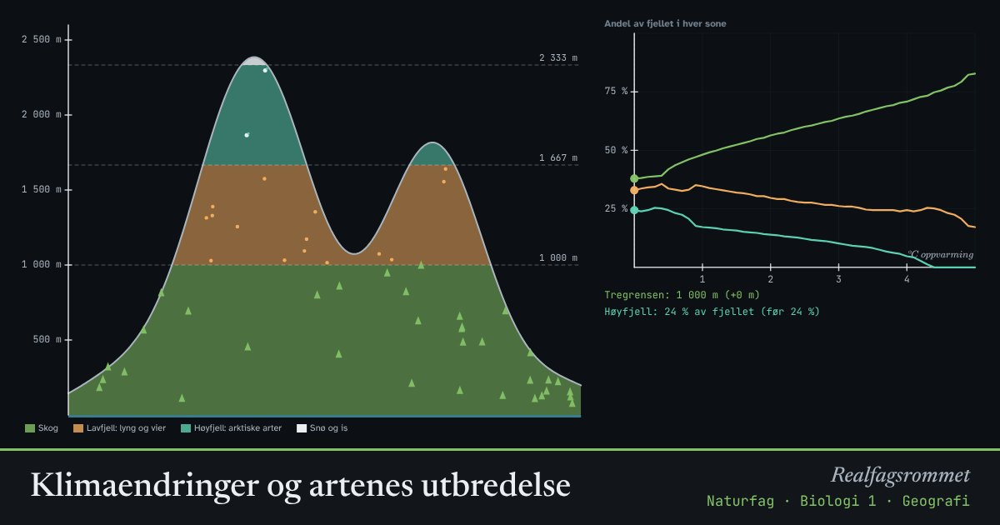

Klimaendringer og artenes utbredelse
Hver art trives innenfor et bestemt temperaturområde. Når klimaet blir varmere, flytter grensene seg oppover i fjellet og nordover. Arter som allerede lever øverst, har ingen steder å flytte.
Start animasjonen
Formler
Om animasjonen
Temperaturen synker omtrent 0,6 °C for hver 100 meter opp. Tregrensen ligger omtrent der middeltemperaturen i juli er 10 °C. Blir det 1 °C varmere, flytter grensen seg rundt 170 meter oppover, hvis trærne får tid til å etablere seg.
Arter tilpasset kulde, som fjellrev, snøspurv og mange fjellplanter, presses oppover. Arealet blir mindre jo høyere opp de kommer, fordi fjellet smalner. På lave fjell kan høyfjellssonen forsvinne helt.
Arter kan også flytte nordover, og nye arter kommer inn fra sør. Det endrer konkurransen i økosystemene og kan redusere det biologiske mangfoldet.
Arter med kort generasjonstid kan tilpasse seg gjennom evolusjon. Når klimaet endrer seg raskt, rekker ofte ikke arter med lang generasjonstid å tilpasse seg.
Prøv dette
- Hvor mye flytter tregrensen seg ved 2 °C oppvarming?
- Hva skjer med høyfjellsartene på det lave fjellet når det blir 3 °C varmere?
- Hvorfor er det et problem for fjellarter at fjellet smalner mot toppen?
- Hvilke arter kan dra nytte av et varmere klima i Norge?
Kompetansemål
- Naturfag: Klimaendringer, utbredelse av arter og biologisk mangfold
Mer om økologi og populasjoner
- Rovdyr og byttedyr
- Hvor mange fisk er det i vannet? Fangst–gjenfangst
- Eksponentiell og logistisk vekst
- Energistrøm og næringskjeder
- Miljøgifter hoper seg opp i næringskjeden
- Karbonkretsløpet og CO₂ i atmosfæren
Mer om klima, miljø og bærekraft
- Drivhuseffekten og jordas strålingsbalanse
- Karbonkretsløpet og CO₂ i atmosfæren
- Havforsuring: CO₂ gjør havet surere
- Miljøgifter hoper seg opp i næringskjeden
- Rovdyr og byttedyr
- Energistrøm og næringskjeder
- Grønn kjemi: atomøkonomi
- Årstider, dagslengde og solinnstråling
- Regnskygge og føhn: hvorfor Bergen er våtere enn Oslo
- Flom: regn, jord og asfalt